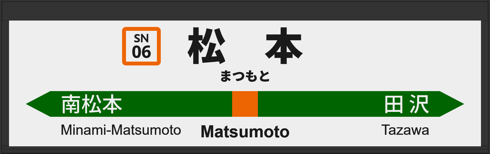

| ←南松本 | ■ 篠ノ井線 | 田沢→ |
|---|
1999年8月、初期型ATOS放送を導入、のち5日で上野型へ。
2025年11月の宇都宮改良型ATOS放送を導入とともに発車メロディも変更。IKSTへ。
| 1 |
■ 篠ノ井線 ■ 中央東線 ■ 中央西線 塩尻・長野方面 新宿方面 名古屋方面 |
1番線次発予告 1番線接近放送 1番線到着放送 1番線終着放送 |
初期型でした。 終着放送の松本単体パーツが旧パーツ？になっています。 放送は「特別急行 （しなの）16号 大阪行」です。 しなのパーツがないのか愛称名が欠落しています。 |
|---|---|---|---|
| 2 |
■ 篠ノ井線 ■ 中央東線 ■ 中央西線 塩尻・長野方面 新宿方面 名古屋方面 |
2番線次発予告 2番線接近放送 2番線到着放送 2番線終着放送 |
旧型でした。 終着放送の松本単体パーツが旧パーツ？になっています。 放送は「普通 長野行」です。 |
| 3 |
■ 篠ノ井線 ■ 中央東線 ■ 中央西線 塩尻・長野方面 新宿方面 名古屋方面 |
3番線次発予告 3番線接近放送 3番線到着放送 3番線終着放送 |
初期型でした。 終着放送の松本単体パーツが旧パーツ？になっています。 放送は「特別急行 あずさ60号 千葉行」です。 |
| 4 |
■ 篠ノ井線 ■ 中央東線 ■ 中央西線 塩尻・長野方面 新宿方面 名古屋方面 |
4番線次発予告 4番線接近放送 4番線到着放送 4番線終着放送 |
初期型でした。 終着放送の松本単体パーツが旧パーツ？になっています。 放送は「」です。 |
| 5 |
■ 篠ノ井線 ■ 中央東線 ■ 中央西線 塩尻・長野方面 新宿方面 名古屋方面 |
5番線次発予告 5番線接近放送 5番線到着放送 5番線終着放送 |
初期型でした。 終着放送の松本単体パーツが旧パーツ？になっています。 放送は「」です。 |